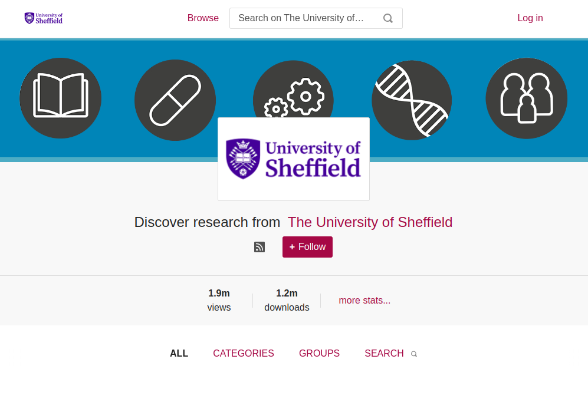
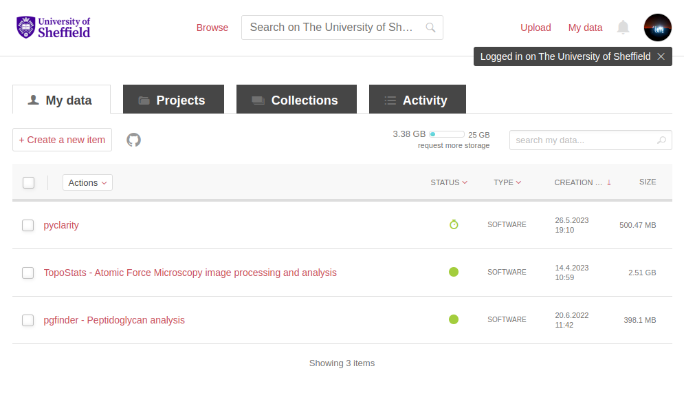
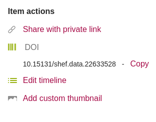
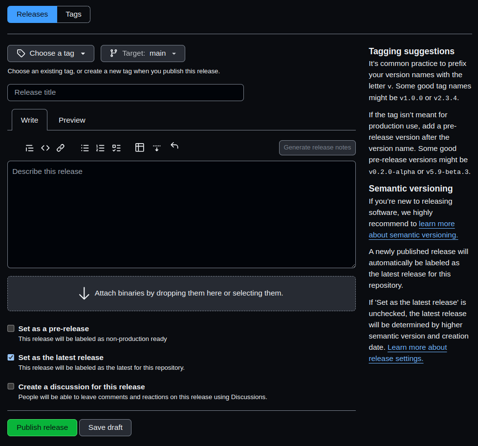
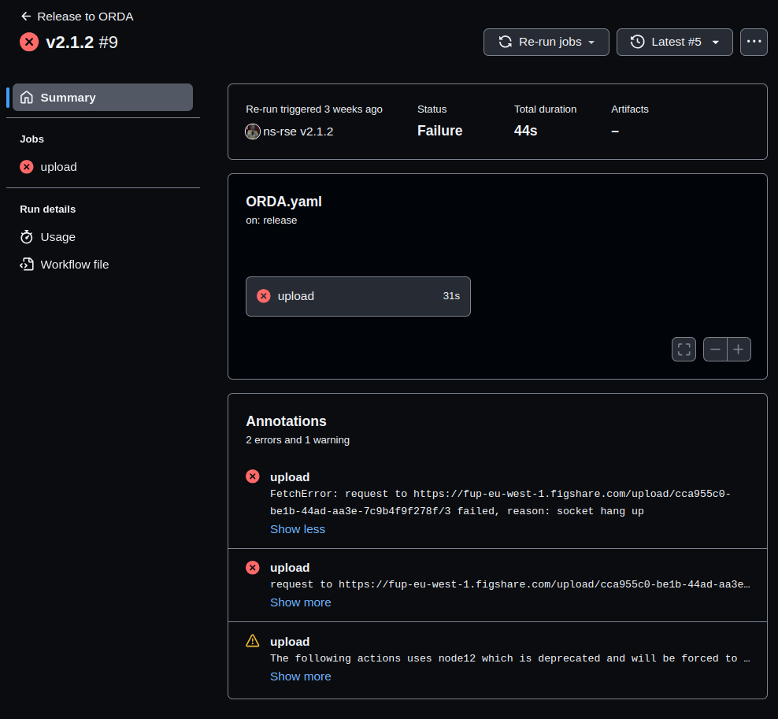
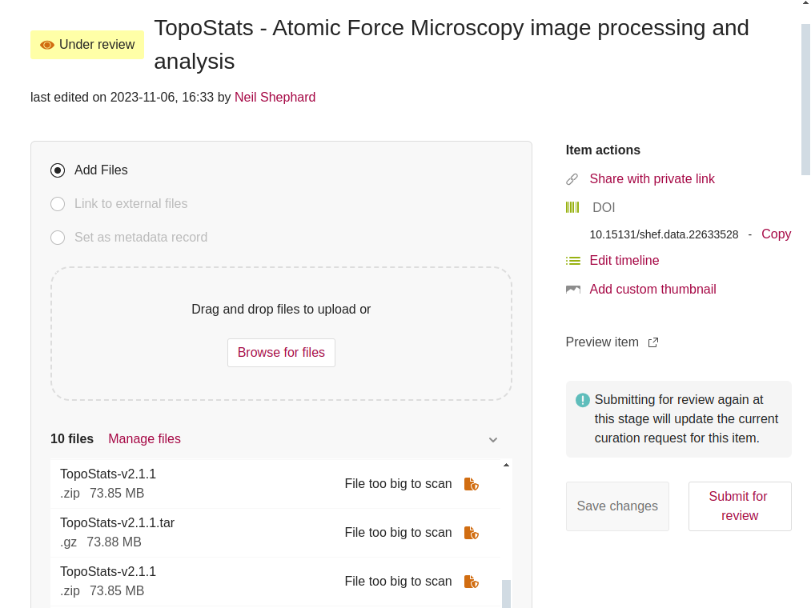

ORDA for FAIR4RS
![]()
Scan This!
University Policy
We aspire to open research culture that values a diverse range of contributions and adheres to the FAIR principles to enable the results of our research to be of maximum benefit to society (findable, accessible, interoperable and reusable), whilst also respecting circumstances that limit data sharing (for example, due to issues of privacy, non-consent, contractual agreements, legislation or practicality). - University statement on Open Research
University Commitment
Open Research practices are embeded in…
Online Research DAta (ORDA) - Basics
- ORDA is a version of the figshare Data Repository.
- Single Sign-On : orda.shef.ac.uk
- 25GB of storage by default (request more).

Account Page
- My Data
- Projects
- Collections
- Activity

Automate Uploading from GitHub
GitHub Workflow release_to_ORDA well documented README.md (thanks Bob 🙏)
- Create an Article on ORDA
- Generate a
FIGSHARE_TOKEN - Store
FIGSHARE_TOKENtoken in repository - Find
FIGSHARE_ARTICLE_ID
- Copy
ORDA.yamlto repository, insertingFIGSHARE_ARTICLE_ID - Create a badge and add to
README.md - Commit & push to GitHub
- Create a release on GitHub
Create an Article
Required
- Authors
- Title
- Description
- Licence
- Ethics
- Policy
- Sharing and access restrictions
- Methodology, headings and units
Optional
- Funding
Figshare Token
- Login to ORDA
- User Menu > Applications
- Create Personal Token
- Description
- Save
Using secrets in GitHub Actions
- Repository Settings > Secrets and Variables > Actions
- Secrets Tab click New repository secret
- Give it a name e.g. ORDA
- Paste Token from ORDA in.
- Add Secret
Figshare Article ID
- Find the DOI
- Figshare Article ID is the trailing number.

Copy & Edit ORDA.yaml
name: Release to ORDA
on:
workflow_dispatch:
release:
types: [published]
jobs:
upload:
runs-on: ubuntu-latest
env:
ARCHIVE_NAME: ${{ github.event.repository.name }}-${{ github.event.release.tag_name }}
steps:
- name: prepare-data-folder
run : mkdir 'data'
- name: download-archive
run: |
curl -sL "${{ github.event.release.zipball_url }}" > "$ARCHIVE_NAME".zip
curl -sL "${{ github.event.release.tarball_url }}" > "$ARCHIVE_NAME".tar.gz
- name: move-archive
run: |
mv "$ARCHIVE_NAME".zip data/
mv "$ARCHIVE_NAME".tar.gz data/
- name: upload-to-figshare
uses: figshare/github-upload-action@v1.1
with:
FIGSHARE_TOKEN: ${{ secrets.FIGSHARE_TOKEN }}
FIGSHARE_ENDPOINT: 'https://api.figshare.com/v2'
FIGSHARE_ARTICLE_ID: 123456789 # Change this number!
DATA_DIR: 'data'Add badge to README.md
Make a Release
- Choose Tag (create if required).
- Add a title.
- Generate release notes (edit if required).
- Set as a pre-release if required.
- Publish release

Make a Release
- Choose Tag (create if required).
- Add a title.
- Generate release notes (edit if required).
- Set as a pre-release if required.
- Publish release

Request a Review
- Choose Tag (create if required).
- Add a title.
- Generate release notes (edit if required).
- Set as a pre-release if required.
- Publish release

Links
Slides : ns-rse.github.io/orda-slides